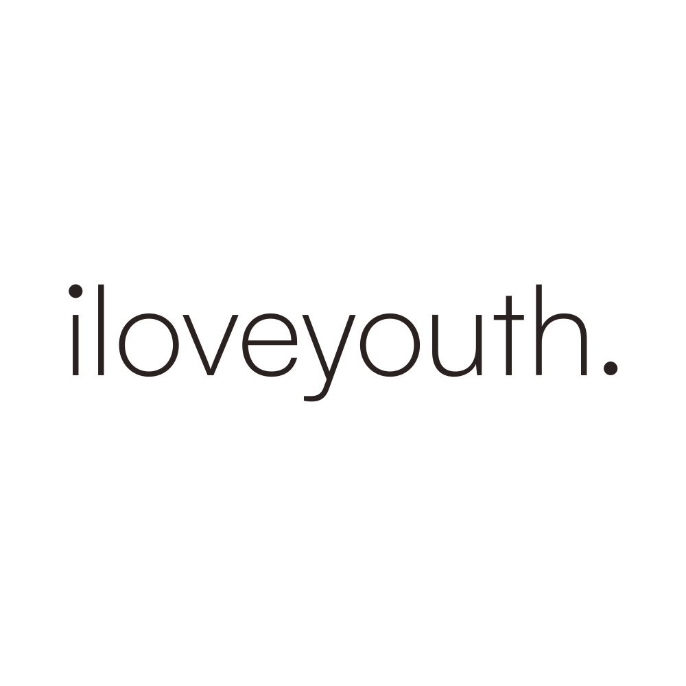
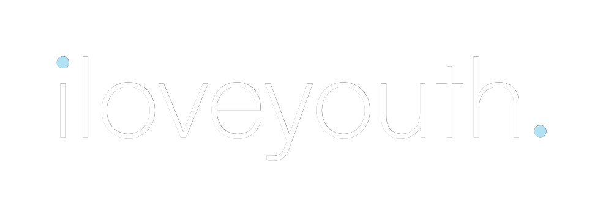
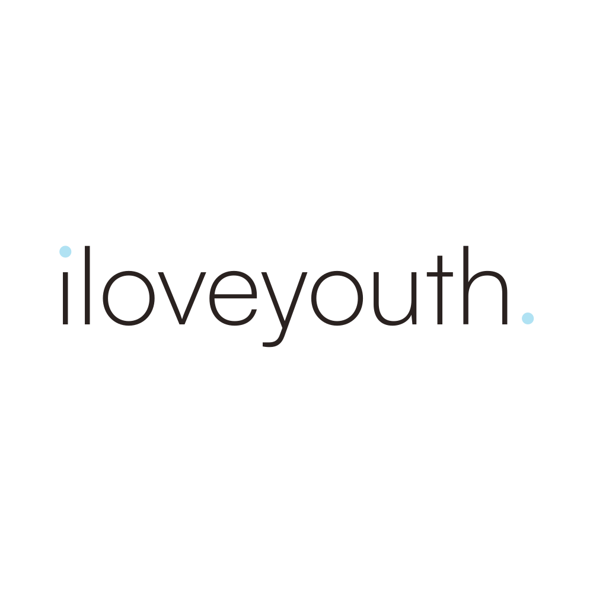
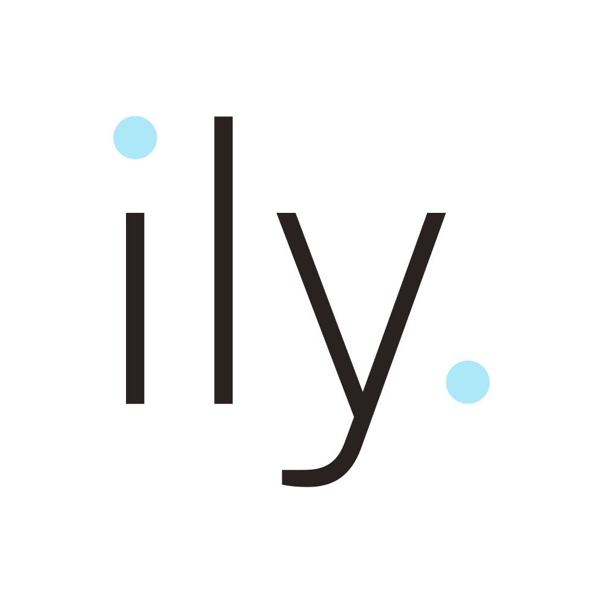

iloveyouth · brand · logo preview
the wordmark is the typeface.
light weight, lowercase, one word. shadow grey on ghost white. this is the primary mark — no custom lettering, no brush, no illustration. the airy humanist-geometric feel is the brand.
primary wordmark · hero

on-brand surfaces
ghost white · primary
 shadow grey · inverse
frosted blue · hero accent
almond silk · supporting
shadow grey · inverse
frosted blue · hero accent
almond silk · supporting
size ladder
in context · site navigation
secondary mark · ily. brandmark
 ghost white
ghost white
 shadow grey
frosted blue
almond silk
shadow grey
frosted blue
almond silk
wordmark · square format
the full wordmark, composed into a 1:1 square for social avatars, app store listings, profile images, and any context where the aspect ratio is fixed square. use this when the full iloveyouth. wordmark must appear but the canvas is square — otherwise use the ily. brandmark.

ghost white
shadow greyexploratory direction · colored period accents
the dots become drops.
a two-color variant where the letters stay quiet and the two period-sized dots — the tittle on the i and the period after the h — flip to frosted blue. the dots literally encode the brand's product truth (hydration → droplets) into the wordmark itself, without ever saying the word. bookended dots, brand-colored. nothing else in clean premium skincare looks like this. the concept is parked pending team review and contrast resolution — see rules below.


full parked inventory · all four colored variants

wordmark · square · white+blue
wordmark · square · dark+blue
brandmark · dark+blue
note: the dark+blue variants sit on light surfaces above so you can see the parked inventory at a glance, but in production these colored dots would still fail contrast on ghost white. if the colored direction is adopted, the rule below applies: dark surfaces only, full stop.
where this variant may be used
- shadow grey backgrounds only. frosted blue on shadow grey is an 11:1 contrast ratio — the dots glow. this is the only context where the colored variant earns its place.
- owned dark surfaces: hero sections with dark photo backgrounds, packaging back panels, dark-mode email headers, social tiles you control, video stings, branded merchandise with dark substrates.
- hero contexts at scale. display sizes (≥120px tall) where the dots are large enough to be unmistakable as a deliberate design element, not a printing artifact.
- the brandmark
ily.square format is the strongest application — the proportionally larger dots survive smaller sizes than the wordmark does.
where this variant may not be used
- any light background. frosted blue on ghost white is ~1.15:1 contrast — the dots vanish into the surface and read as a printing error or smudge. the "avoid" tile above demonstrates the failure mode.
- any third-party context where the background can't be controlled — press kits, retail partner sites, third-party brand portals, paid media placements. use the mono dark variant instead.
- small sizes (below ~80px wordmark width / ~48px brandmark) on any background. the dots become indistinguishable from anti-aliasing artifacts.
- print/production media that can't reproduce frosted blue accurately — single-color spot ink, foil stamping, vinyl, embroidery. use the mono white variant instead.
- anywhere alongside the mono mark in the same layout. pick one variant per surface. mixing reads as inconsistent, not deliberate.
supporting rules
- never explain the dots in copy. they are a visual signature, not a marketing message. never captioned, decoded, or labeled as "hydration drops" in social posts, press, or product pages. the moment you explain them, they become a gimmick. they work because they're not explained.
- never substitute another color. the whole point is the system tie-in to frosted blue as the locked hydration cue. almond silk dots, neutral dots, or any other color breaks the meaning entirely.
- pair with the mono variant, not replace it. if adopted, the colored variant ships alongside the mono mark — used on dark surfaces only — never as the universal primary mark.
current parked file inventory: ily-wordmark-white+blue+rect, ily-wordmark-white+blue-square, ily-wordmark-dark+blue-square, ily-brandmark-white+blue-square, ily-brandmark-dark+blue-square. three source-file issues must be resolved at the illustrator source before any production adoption: (1) the dot fill is #b0e2f3, not the locked frosted blue #ADE8F9 — re-fill from the saved swatch; (2) the white+blue svgs include a redundant dark-letters layer underneath the visible version — delete the hidden group; (3) ily-wordmark-white+blue+rect uses a +rect suffix instead of the standard -rect separator used everywhere else — rename for consistency. (4) ily-brandmark-white+blue-square.png is not yet exported; only the svg exists.
brand in use · "youth starts with you."
youth starts with you.
clean, effective hydration. no drying alcohols, no jargon, no hype. just the good stuff, named in plain language.
youth starts with you.
youth starts with you.
youth starts with you.
more ideas worth exploring
tagline as typographic system, not just a line
every long-form headline ends with a period in the same satoshi light voice. a homepage hero might say "hydration, named.", a product page might say "two ingredients. one result.", a journal post might say "ceramides, explained." the period becomes a brand-wide signature that ties every piece of copy to the wordmark.
homepage hero
hydration, named.
no proprietary blends. no marketing language. every ingredient called by its real name and explained in one sentence.
two ingredients. one result.
ceramides, explained.
the quiet routine.
no drying alcohols. ever.
the period as ingredient list
the period as rhythm
no fillers. no fragrance. no fluff. just ingredients.
h in the wordmark (signature). once adopted, every hero, every campaign banner, every social tile speaks the same typographic voice as the logo.
animated wordmark for digital
hydration fills the wordmark. frosted blue rises through the letters from bottom to top like water filling a vessel, then settles into shadow grey — the brand's identity color — once the mark is fully "hydrated." the animation IS the product promise: the mark literally fills with the brand's hero accent before becoming itself. plays once when the section enters the viewport. never explained.
mask-image + animated @property custom properties driving a linear-gradient fill level. no separate animation asset, no lottie, no gif, no js dependency beyond the intersection observer trigger. plays exactly once per page load and never autoloops. respects prefers-reduced-motion — users who've opted out see the fully-settled shadow grey wordmark immediately with no animation. the replay button above is for the brand preview only and would not ship to production. the animation is a one-time hello on first hero load, not a feature you interact with. on slower devices the rendering stays cheap because it's a single masked div with a gradient transform — no per-letter path animation, no heavy rendering cost.
tagline lockup as a secondary mark
iloveyouth. with youth starts with you. set underneath in a smaller weight, locked-up as a single composition for hero contexts (packaging back panels, email headers, footers). pairs the tagline visually with the wordmark so they reinforce each other — the locked tagline gets the same visual permanence as the locked wordmark.
youth starts with you.
youth starts with you.
youth starts with you.
youth starts with you.
"named." as a campaign signature
a campaign series where every visual is one ingredient at a time, set against ghost white with the ingredient name in display type plus a single line of plain-language explanation. niacinamide. brightens. strengthens the barrier. next slide: ceramides. lock moisture in. the campaign IS the voice.
named · ingredient series · 01
niacinamide.
brightens. strengthens the barrier.
02 · named
ceramides.
lock moisture in.
03 · named
hyaluronic acid.
draws water deep.
04 · named
squalane.
seals it all in.
named · ingredient series · 05
panthenol.
soothes. quietly.
hydration as a number, not a claim
a homepage stat moment: a single huge number ("96%") in light weight with the tagline beneath. the number ties to a specific clinical or self-reported result — never vague, always sourced. proof, not promise.
14-day study
96%
of users said skin felt more hydrated.
self-reported, n=120 · independent panel · march 2026
72hr.
lasting hydration in a single application.
0.
drying alcohols. ever.
2.
ingredients. one result.